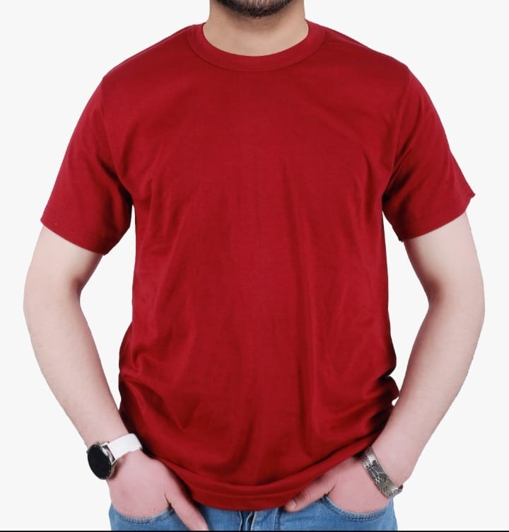
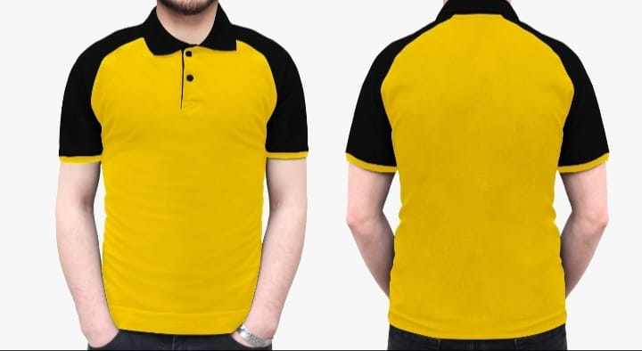
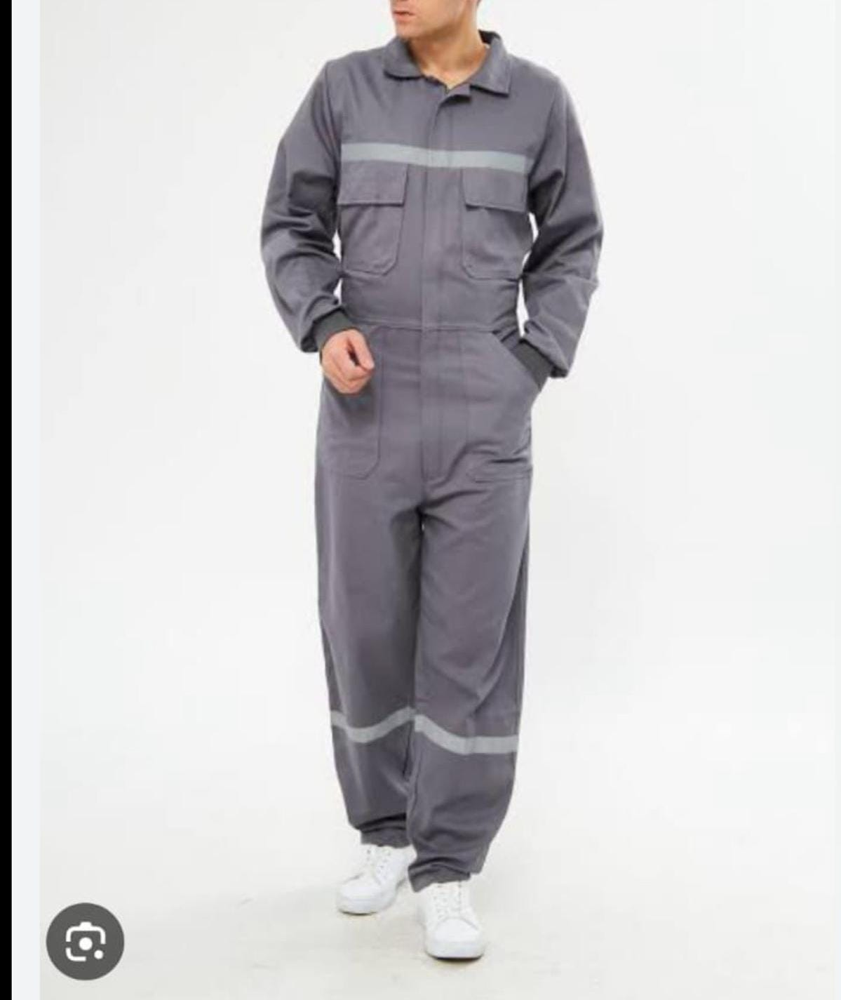
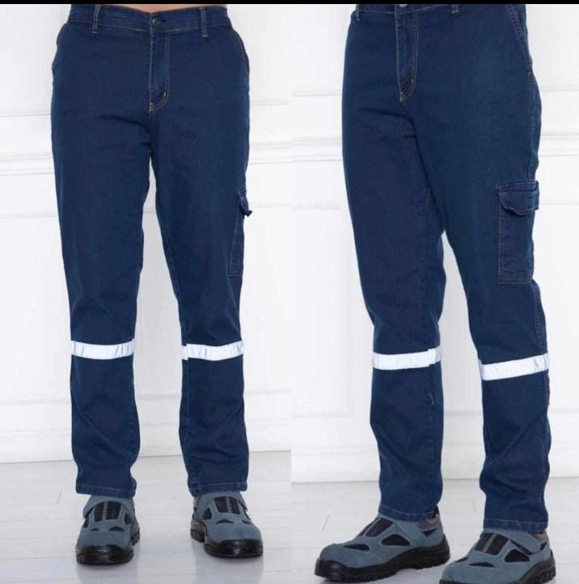
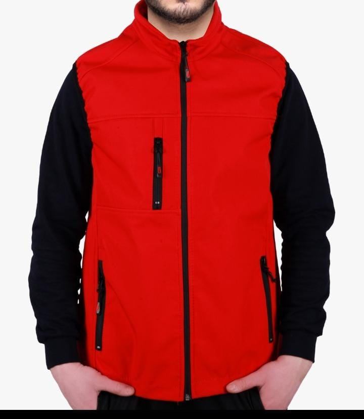
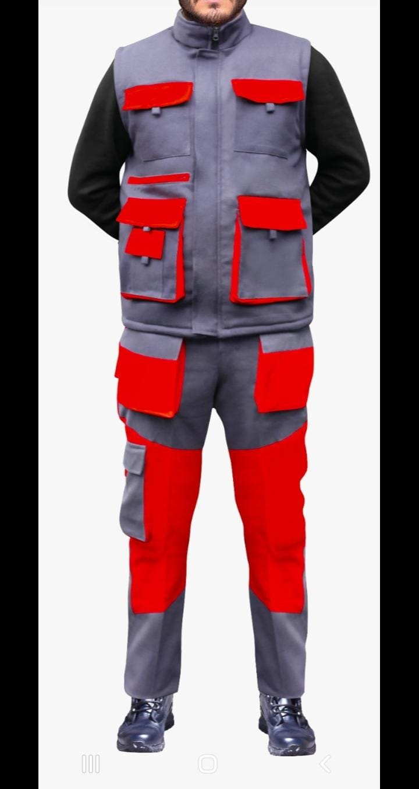
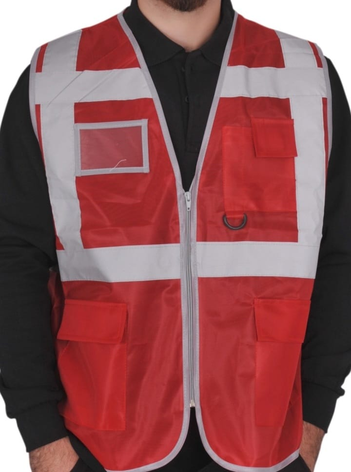
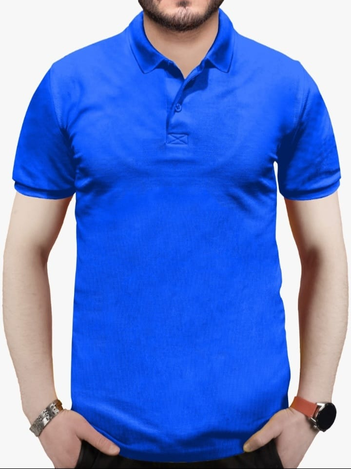

Yaratıcılığın Aktığı Yer
Dinamik galerimizde tasarımlarımızın canlılığını hissedin.








Tasarım Hizmetlerimiz
Marka & Kurumsal Kimlik
Markanızın ruhunu yansıtan logo, renk paleti ve görsel dil oluşturuyoruz.
UI/UX Tasarımı
Kullanıcıların seveceği, estetik ve işlevsel dijital deneyimler tasarlıyoruz.
Pazarlama Materyalleri
Hedef kitlenizi harekete geçiren sosyal medya görselleri ve reklamlar hazırlıyoruz.
Bir Fikriniz mi Var?
Hayalinizdeki projeyi birlikte gerçeğe dönüştürelim. Tasarım ihtiyaçlarınız için buradayız.
İletişime Geçin